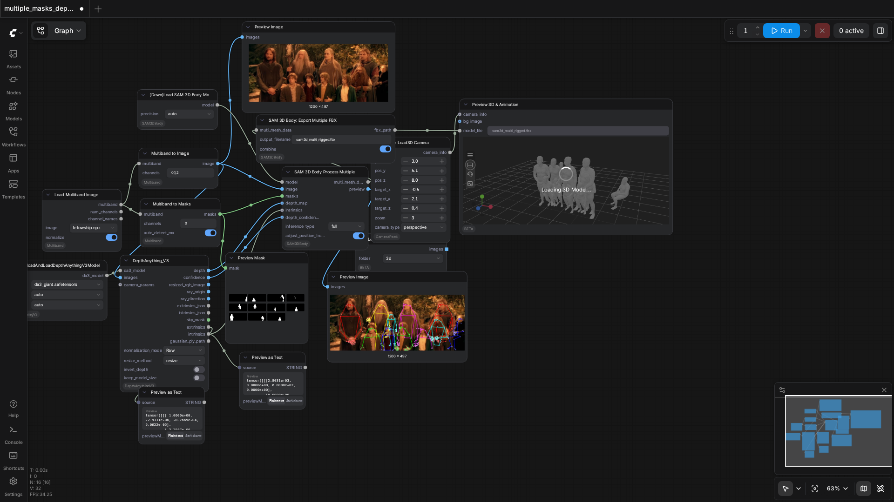
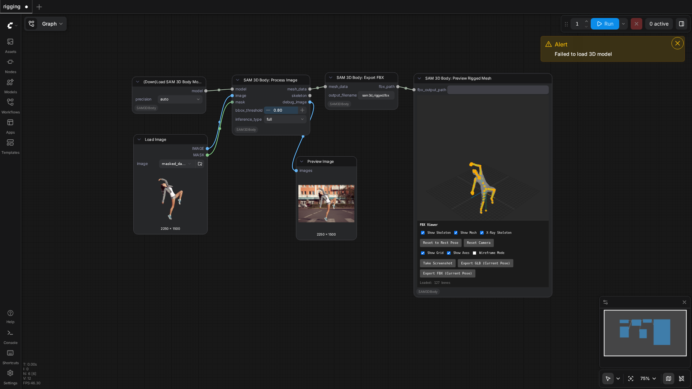
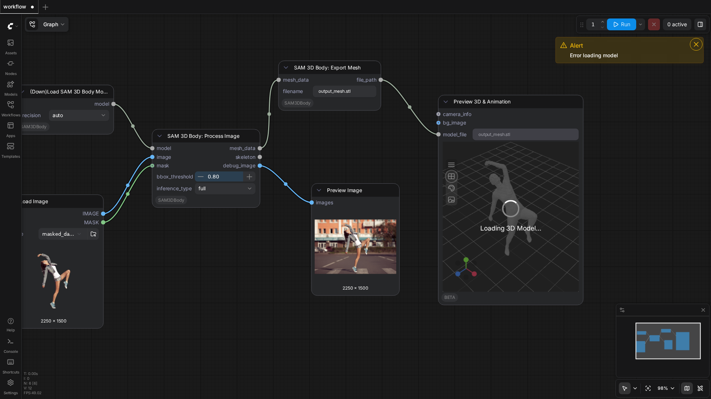

100.0%
4 passed
4/4 tests
Workflows

multiple_masks
pass

multiple_masks_depthcorrected
pass

rigging
pass

workflow
pass
Downloaded Models
14 files · 7.7 GBmodels/depthanything3/
da3_giant.safetensors5.1 GB
.cache/huggingface/CACHEDIR.TAG191.0 B
.cache/huggingface/download/model.safetensors.metadata125.0 B
.cache/huggingface/.gitignore1.0 B
models/sam3dbody/
model.safetensors2.0 GB
assets/mhr_model.pt663.9 MB
.gitattributes1.5 KB
model_config.yaml1.5 KB
.cache/huggingface/CACHEDIR.TAG191.0 B
.cache/huggingface/download/model.safetensors.metadata125.0 B
.cache/huggingface/download/assets/mhr_model.pt.metadata125.0 B
.cache/huggingface/download/model_config.yaml.metadata101.0 B
.cache/huggingface/download/.gitattributes.metadata100.0 B
.cache/huggingface/.gitignore1.0 B